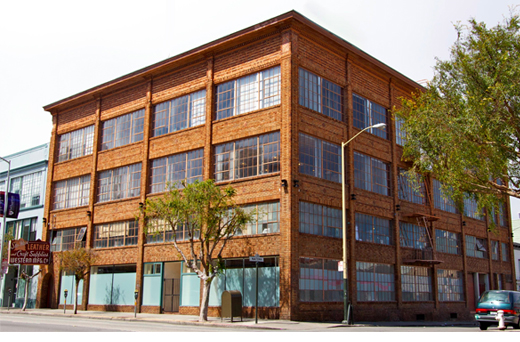

        <section>
            <div class="layout-semibreve">
                
                {{ include nav-breadcrumbs.html }}

                <h2>Contact Us</h2>

                <div class="layout-gutter">
                    <div class="layout-minim">
                        <p>Code for America's headquarters are located in San Francisco's South of Market District at 155 9th Street, San Francisco, CA, 94103 [<a href="https://maps.google.com/maps?q=155+9th+Street,+San+Francisco,+CA&hl=en&sll=-26.719374,27.832642&sspn=0.011883,0.022359&hnear=155+9th+St,+San+Francisco,+California+94103&t=m&z=16">map</a>].</p>

                        <p>Regular office hours are from 9am - 5pm PST and we also host evening and special events.</p>

                        <p>For questions or comments please contact us at info[at]codeforamerica.org or 415-625-9633.</p><a href="https://maps.google.com/maps?q=155+9th+Street,+San+Francisco,+CA&hl=en&sll=-26.719374,27.832642&sspn=0.011883,0.022359&hnear=155+9th+St,+San+Francisco,+California+94103&t=m&z=16"></a>
                        
                        <h3>Media Requests</h3>

                        <p>Please contact Jaime-Alexis Fowler at <!--415-200-9468 or--> ja[at]codeforamerica.org. For more information about Code for America visit our <a href="../communications">Communications</a> page.</p>
                        
                        <h3>Desk Rental</h3>

                        <p>Need a desk and some office space with wifi, snacks, good people, and the occasional ping pong game? Code for America has <a href="../desks">desks available to rent</a>.</p>
                    </div>

                    <div class="layout-minim">
                        <form class="spotlight">
                            <h3>Speaking Requests</h3>

                            <div class="list-form">
                                <p>Some of Code for America's speakers include Founder and ED <a href="http://codeforamerica.org/people/jennifer-pahlka/">Jennifer Pahlka</a>, CTO <a href="http://codeforamerica.org/people/michal-migurski/">Michal Migurski</a>, Communities Program Director <a href="http://codeforamerica.org/people/catherine-bracy/">Catherine Bracy</a>, and UX Evangelist <a href="http://codeforamerica.org/people/cyd-harrell/">Cyd Harrell</a>.</p>

                                <p>We're also happy to contact <a href="../geeks/our-geeks/2014-fellows/">Fellows</a>, <a href="http://www.codeforamerica.org/2013/09/17/brigade-captains/">Brigade Captains</a> and <a href="../team/">Board</a>.</p>
                                
                                <a href="https://codeforamerica.wufoo.com/forms/code-for-america-speakers-request" class="button button-prominent">Request a Speaker</a>
                            </div>
                        </form>
                    </div>
                </div>
            </div>
        </section>
